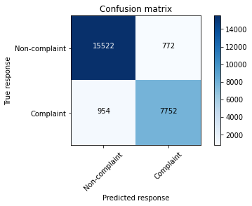
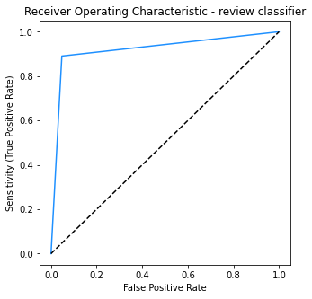

Py: Classifying review sentiment#
This notebook was originally created by Rob Daly for the Data Analytics Applications subject, as Case study 7.1 - Classifying automative reviews in the DAA M07 Natural language processing module.
Data Analytics Applications is a Fellowship Applications (Module 3) subject with the Actuaries Institute that aims to teach students how to apply a range of data analytics skills, such as neural networks, natural language processing, unsupervised learning and optimisation techniques, together with their professional judgement, to solve a variety of complex and challenging business problems. The business problems used as examples in this subject are drawn from a wide range of industries.
Find out more about the course here.
Purpose:#
This notebook walks through the use of NLP to analyse customer sentiment. The objective of the case study is to identify ‘complaints’ from a sample of YELP reviews for automotive companies. YELP is a North American review service where customers review different service providers. Reviewers write a text review and are then asked to rate the service on a five point scale.
References:#
The dataset that is used in this case study was sourced from a Kaggle competition in which YELP provided a set of reviews: https://www.kaggle.com/yelp-dataset/yelp-dataset.
It contains information about businesses across 8 metropolitan areas in the USA and Canada.
For this case study, the dataset has been refined to contain 50,000 reviews for companies tagged as ‘automotive’.
Packages#
This section installs packages that will be required for this exercise/case study.
import json # Json is used to load json files.
import os # os is used to join paths for windows and unix use.
import random # For random number generation.
import time # Useful for timing processes.
from collections import Counter # Counter provides a quick way to add items in a list.
from collections import defaultdict # Enhanced mapping dictionary that can take a default value.
import numpy as np # For mathematical operations.
import matplotlib.pyplot as plt # For plotting.
from nltk.tokenize import word_tokenize
# 'word_tokenize' is a tokeniser for natural language.
# There are many such options available.
import nltk
nltk.download('punkt')
# Sklearn has many useful machine learning packages.
# The following are used in the notebook.
from sklearn.model_selection import train_test_split
from sklearn.linear_model import LogisticRegression
from sklearn.preprocessing import StandardScaler
from sklearn import metrics
# Used to read files from a web URL
from urllib.request import urlretrieve
# Package used in the confusion matrix function.
import itertools
[nltk_data] Downloading package punkt to /Users/Jacky/nltk_data...
[nltk_data] Package punkt is already up-to-date!
Functions#
This section defines functions that will be used for this exercise/case study.
# Define a function to load a json data file.
def load_json(data_set_name, dir = '', verbose=True):
'''
This is a function to load the yelp dataset which is stored in json format.
Use the optional dir argument if the file is not in the same directory
as the notebook.
'''
if verbose:
print('loading', data_set_name, 'data ', end = '')
# If the user has set Verbose = True (or omitted this argument),
# these lines of code provide a message to the person running the code
# that the dataset is being loaded.
filename = os.path.join(dir, data_set_name)
f = open(filename, encoding='utf8')
data_set = list()
for counter, line in enumerate(f):
data_set.append(json.loads(line))
if verbose and ((counter % 100000) == 0):
print('.', end='')
# If the dataset is very big, these lines of code print '.'s to
# show that the import step is progressing.
f.close()
if verbose:
print(' {:,} observations have been imported.'.format(len(data_set)))
# This statement summarises the number of observations that have been
# imported from the dataset.
return data_set
# Define a function to print the Yelp reviews neatly.
def print_review(review):
for item in ['business_id', 'stars', 'funny', 'review_id', 'date', 'useful',
'user_id', 'cool']:
print('{:<12s}: {:}'.format(item, review[item]))
print ('text: "', review['text'], '"', sep = '')
# The default for print() is to put a space between each argument.
# Here sep='' is used to overrule this.
print()
return
# Define a function to select reviews with a certain rating (number of stars).
def sample_with_rating(review_data, rating, sample_size):
select_data = [data_row for data_row in review_data \
if data_row['stars'] == rating]
review_sample = random.sample(select_data, sample_size)
return review_sample
# Define a function to format the summary of review ratings.
def print_review_count(review_count):
head_format = '{:<7s} {:>10s} {:>10s}'
row_format = '{:<7} {:>10,} {:>10.1%}'
print(head_format.format('Stars', 'Total', 'Percent'))
print(head_format.format('-----', '-----', '-------'))
total_reviews = sum([count for count in review_count.values()])
# Add the percent to a dictionary indexed in the same way.
review_perc = dict()
for rating, review in review_count.items():
review_perc[rating] = review/total_reviews
for k in range(5, 0, -1):
print(row_format.format(('*'*k), review_count[k], review_perc[k]))
print(head_format.format('','-------','-------'))
print(row_format.format('Total', total_reviews, 1))
# Define a function to print some example reviews based on a user input
# of 'min', 'max', 'average' etc summary function.
def print_certain_reviews(data, summ_func, descr):
# The 'summ_func' will be 'min', 'max', 'average', 'median' etc.
certain_review = summ_func([length for (review, length) in data])
reviews = [review for (review, length) in data if length == certain_review]
review_count = len(reviews)
if review_count == 1:
print("Below is the 1 {:s} review of {:,} words:".format(descr, certain_review))
else:
print("Below are the {:,} {:s} reviews of {:,} words:".format(review_count, descr, certain_review))
for review in reviews:
print('"',review,'"')
print()
# Define a function to perform the Bag of Words vectorisation.
def vectorise_data(data_set, vocab):
matrix = []
for k, review in enumerate(data_set):
if k % 1000 == 0:
print('.', end='')
# Prints '.' every 1,000 reviews so that you
# know the code is still running.
token_count = Counter(review['tokens'])
# Create a count of all the unique tokens in the review.
matrix.append([token_count.get(token, 0) for token in vocab])
# The token counts for the review are added to 'matrix'.
# The 'get' function of Counter is used to return a 0
# for any tokens in the vocabulary that are not in a review.
print()
return matrix
# Define a function to calculate a range of success metrics for a fitted model.
def return_metrics(y, y_pred):
scores = dict()
scores['Accuracy'] = metrics.accuracy_score(y, y_pred)
scores['F1-score'] = metrics.f1_score(y, y_pred, average='binary', pos_label=True)
scores['Precision'] = metrics.precision_score(y, y_pred, pos_label=True)
scores['Recall'] = metrics.recall_score(y, y_pred, pos_label=True)
scores['Confusion Matrix'] = metrics.confusion_matrix(y, y_pred)
return scores
# Define a function to plot confusion matrices in an easy to visualise format.
def plot_confusion_matrix(cm, classes,
title='Confusion matrix',
cmap=plt.cm.Blues):
'''
This function prints and plots a nicely formatted confusion matrix.
'''
plt.imshow(cm, interpolation='nearest', cmap=cmap)
plt.title(title)
plt.colorbar()
tick_marks = np.arange(len(classes))
plt.xticks(tick_marks, classes, rotation=45)
plt.yticks(tick_marks, classes)
thresh = cm.max() / 2.
for i, j in itertools.product(range(cm.shape[0]), range(cm.shape[1])):
plt.text(j, i, cm[i, j],
horizontalalignment='center',
color='white' if cm[i, j] > thresh else 'black')
plt.tight_layout()
plt.ylabel('True response')
plt.xlabel('Predicted response')
# Define a function to print out the success metrics of a model.
def print_scores(scores, confused = False):
print(('{:^9} '*4).format(*scores.keys()))
print(('{:^9.1%} '*4).format(*scores.values()))
if confused:
plot_confusion_matrix(scores['Confusion Matrix'],
classes = ['Non-complaint', 'Complaint'])
Data#
This section:
imports the data that will be used in the modelling;
explores the data; and
prepares the data for modelling.
Import data#
# Specify the URL of the dataset to be imported.
url = 'https://actuariesinstitute.github.io/cookbook/_static/daa_datasets/DAA_M07_CS1_data.json'
urlretrieve(url, "DAA_M07_CS1_data.json")
('DAA_M07_CS1_data.json', <http.client.HTTPMessage at 0x1297bdca0>)
# Read the required YELP file.
review_data = load_json("DAA_M07_CS1_data.json")
# Alternatively, use the code below with Google Colab to upload the file
# from your computer.
# from google.colab import files
# files.upload()
# When prompted, select the DAA_M07_CS1_data.json dataset to upload.
# Note that this may take some time to upload as the file is large.
# review_data = load_json('DAA_M07_CS1_data.json')
loading DAA_M07_CS1_data.json data . 50,000 observations have been imported.
Explore data (EDA)#
The following data exploration is performed below:
look at the features available in the data;
show some example reviews;
see how many reviews there are in each rating category; and
look at how long the reviews are.
# Extract the feature names from the data.
features = {key for review in review_data for key in review.keys()}
# The '{}' brackets are used to define a set that contains unique entries.
print(features)
# The feature names could also be obtained used a for loop per the code below.
# This is a less efficient way of extracting the information.
features2 = set() # This creates an empty set.
for review in review_data:
for key in review.keys():
features2.add(key)
print(features2)
{'user_id', 'date', 'review_id', 'text', 'funny', 'business_id', 'useful', 'cool', 'stars'}
{'user_id', 'date', 'review_id', 'text', 'funny', 'business_id', 'useful', 'cool', 'stars'}
# Print a sample of 5 random reviews from the full dataset.
review_sample = random.sample(review_data, 5)
# The 'sample' method in the 'random' package selects, without replacement,
# the number of items you want from a list.
for review in review_sample:
print_review(review)
business_id : MqcUTJ6T_DsJVBreh5r68g
stars : 5.0
funny : 1
review_id : DbOWQ9bysVDBo9ILkWZf6g
date : 2019-06-26 14:03:43
useful : 0
user_id : OJz7Rbav0tm1AAXwArGE6A
cool : 0
text: "Well Just picked up 4th vehicle that has gone to Notorious. Also referred a number of friends to them. Quality work, come up with great ideas on little details, shop and staff are unreal and pricing is fair but you get what you pay for! Will be dropping off #5 as soon as it gets delivered!"
business_id : H7mjnD5AZoMZDyNjUEcVDg
stars : 5.0
funny : 0
review_id : v1153so3LG3Pfbd0ojx6IA
date : 2011-08-15 21:37:48
useful : 0
user_id : JV1lIvs4oUevaPJh5O4Yqw
cool : 1
text: "Had the guys from suburban come out and install shower glass and a wall to wall mirror for us, they did a great job for us. When we had an issue with one of the shower pieces and they came right away and fixed it for us at no additional charge."
business_id : ApG6TS7aDiYSZaGjcuzEHA
stars : 5.0
funny : 0
review_id : yEZfm2_UlRoOMljPG7STsg
date : 2017-12-13 00:19:38
useful : 2
user_id : Njgb90oPFcntk7ErRozvwA
cool : 0
text: "I recently purchased a 2015 A6 from the Audi Chandler dealership and am very happy with the whole process. The saleswoman Adora was not pushy and awesome to work with me on pricing. I spent about 3 hours there on a Friday night (time well spent) and was finally able to make a deal. They also worked with me on dropping off my previous lease and taking care of the whole lease drop off process.
Appreciate Adora and team for working with me on the purchase. Will be doing more business here in the future."
business_id : LwNZ1AR4_5iukgQYuhmTOg
stars : 1.0
funny : 0
review_id : kshpl7b25ndcTM2oa7eHJg
date : 2017-04-22 02:48:47
useful : 1
user_id : bfyel8hfVMpbwmYZRAKmJQ
cool : 0
text: "So I came here looking at a 2005 Bentley Continental Gt that they had pre-owned. Met a fantastic guy named Sal, great person, very friendly and pretty much closed the deal. Once we got inside for paperwork, a person by the name of Zayne disrespected me so fouly, I don't want to put down here what he did, but, I immediately walked away because of the amount of disrespect he gave me, very disgusting. I highly recommend you do not do business with Zayne. I rate 1 star solely because of that man."
business_id : 8Ivagy4hMgx7hHdY_QJ_hA
stars : 5.0
funny : 1
review_id : BQZ_18SrDN4WIo20waGlmQ
date : 2014-05-24 16:38:03
useful : 1
user_id : yTiYaNdjrHvUtQgmYyybbg
cool : 0
text: "Customer service was top notch all the way around. Fast and easy process, no games. Extremely happy with the entire experience. Will definitely be back for my next vehicle and will recommend family and friends.
Spencer was a big help.
Thanks Matt!!"
# Print 5 random reviews with 1 star ratings using the
# 'sample_with_rating' function defined at the top of the notebook.
review_sample = sample_with_rating(review_data, rating=1, sample_size=5)
for review in review_sample:
print_review(review)
business_id : hKC0ZeoiCUmYCsJVTAQEgQ
stars : 1.0
funny : 0
review_id : DjkV7-E7wngueXpeI1DGjQ
date : 2013-10-18 12:51:01
useful : 2
user_id : hm1MLz1yJV--ceZG4RY1oA
cool : 0
text: "Had an unexpected brake problem with my Honda. Called in advance to see if they could look at my vehicle that day. Had it towed in and it took them two days to put new brakes on. I never received an estimate. Every time they gave me that it would be completed they missed. They called at 4:45 and said it was almost done. When I arrived one hour later it still was not done. And as I pulled out of the parking lot I noticed my clock and radio were not working and need to be reset. How can a brake job affect your radio?! I wouldn't trust these fools to put air in my tires. Overpriced, under deliver, disrespectful and incompetent. BEWARE!"
business_id : 4r_oR7zo2oV0_BGlAN6ltw
stars : 1.0
funny : 0
review_id : jw5_7C9XQZyHLem6oEw9iw
date : 2017-02-11 19:23:32
useful : 0
user_id : qC3OGrFVAKacAvT51scF-w
cool : 0
text: "**SCAM ALERT**
Thought their alignment / oil change package was a good deal on Groupon so I bought it and took in my truck. My left front ball joint was dry as a bone and a little squeaky when I dropped it off. When I got it back the manager, an older honest looking white guy, told me my ball joint was shot and so were my shocks and that I'd need to put a few grand into the repairs in the near future if I wanted to keep her on the road. He said they did what they could with the alignment but it wouldn't stay out with such a damaged joint. Needless to say the alignment went out of whack quickly. Took the truck in to a friend at another shop and it turns out the guys at Fletcher's had loosened the joint to make it worse and left it dry in an attempt to con me. All it needed was a tightening and some lube. I hate to leave negative reviews but this place is trouble and you guys need to know about it.
**AVOID THIS SHOP**"
business_id : QC8cV2iUE7dtXW-CayBgUg
stars : 1.0
funny : 1
review_id : O6MawRG6VC90AOHoKWygqA
date : 2016-10-28 19:08:49
useful : 4
user_id : IfX18Uxx_zjipapPOG7CwQ
cool : 1
text: "My wife and myself just moved to the Summerlin area from Rancho Mirage, Ca. We have been Porsche owners for the past 30 years... most recently a Cayenne Turbo. We went to the dealer looking for a Panamera. We had another trade in for them to look at. We found a silver Panamera that we liked and the salesman ( not named to protect the guilty) said he would give us a great deal. We probably should have walked out then when he said that. I gave him the vin# for the trade in and he then put everything into the computer. After about 10 minutes of plugging everything in he then left to supposedly talk to his manager to "give us a great deal." After another 10 minutes he came back with a lowball trade in number which he claimed was from KBB, and also virtually nothing off the Panamera...he previously said that they wanted to move the car and it would show in the numbers he was going to give me. I then gave him my printed copy of the KBB dealer trade in value which was $10,000 higher than his trade in number. He must have sized us up and thought we were stupid. We then left. The next day I called my old dealership and one more on an identical Panamera, and not only received the KBB trade in value, but also $8,000 off the new Panamera. It was pretty obvious that Gaudin was just trying to pick us off. Needless to say we will never go back even for servicing on our cars."
business_id : DOGLO1H45GV3C2cd-FzcOw
stars : 1.0
funny : 0
review_id : _jDN7Re70eQV224gDkkULw
date : 2017-07-05 07:02:10
useful : 1
user_id : EUZu6ds0MHtyUDwLgezWOQ
cool : 0
text: "My 2008 Kia Sedona had a recall so I called to make an appointment. I also had a jammed seat so I figured I would get both issues taken care of at the same time. I was advised if my seat was an easy fix there would be no charge. If it was more complicated they would have to charge me. Fair enough. I brought my car in at the scheduled time. I was told 2 hours so I decided not to wait. No shuttle was offered so I called for a ride. Over 4 hours later I received a call that my car was ready. I showed up and they were just finishing drying my car. I was handed my keys and was told my car was washed, recall fixed and my seat fixed. No charge. I was not given any paperwork for what was done on my car. I thought it was odd but figured it was because I wasn't charged anything. I was thrilled. The next day I needed to take my seats out. My seat was still jammed!! I called immediately. Was told the Service dept was closed but a manger would definitely call as I should have been given paperwork on what was completed and she also said it was unacceptable that I was told a service was preformed and it wasn't. I am not even sure if the recall issue was completed. I never received a call from the manager of the service dept. I am extremely unhappy with the (lack) of service and follow up. I will never again go back. They obviously don't care about their customers."
business_id : dWsQ4HSqSQU3vetA0us10w
stars : 1.0
funny : 1
review_id : 3Jug_Ik6CStmymKoexmxXA
date : 2010-02-25 04:53:54
useful : 2
user_id : -NcqwXiuFY9b1nsz3VJ27g
cool : 1
text: "I bought my brand new Jeep from Courtesy Dodge. The customer service for that was great. They went out of their way, rented me a car until my new Jeep was available for pick up etc.
My experience in their service dept. was not so impressive. Do not let them run a diagnostics test on your vehicle unless you want to be ripped off. I asked them (1 year after purchasing) "why is my engine light on?" And without asking us any questions or giving us any quotes the handy-dandy mechanic went ahead and ran one of their handy-dandy diagnostic tests to reveal the possible cause for this handy-dandy engine indicator light going off . $200 or so later (just for the test) it turns out engine light goes off because locking gascap (that was installed 2 months prior ) was not "compatible"
Who would have thought??
This is my advice:
Save yourself the money and go buy a diagnostics tester from Canadian Tire and test it yourself! This new on-board diagnostic indicator stuff in vehicles now is apparently a whole different line of technology than what people are used to. Another scam for the automobile consumers! I Wish I would have known this before.
Has anyone else had a bad experience with them because I would like to know seeing that I apparently have no choice but to take my Jeep back there for maintenance and repairs... Thanks."
# Count the number of reviews in each rating category.
# This is done using a counter as an efficient method to iterate through items.
review_count = Counter([review['stars'] for review in review_data])
# A list constructor is used to produce a list of all the star ratings
# and the Counter function is then used to count how many reviews there are
# in each star rating group.
print_review_count(review_count)
Stars Total Percent
----- ----- -------
***** 27,101 54.2%
**** 3,915 7.8%
*** 1,790 3.6%
** 2,470 4.9%
* 14,724 29.4%
------- -------
Total 50,000 100.0%
# Check the length of different reviews.
# A list constructor is used to produce a list of how long each review is
# in characters.
review_length_characters = [len(review['text']) for review in review_data]
# Print summary statistics for the number of characters in each review.
print('The longest character length in a review is {:,}.'.format(max(review_length_characters)))
print('The shortest character length in a review is {:,}.'.format(min(review_length_characters)))
print('The average character length of reviews is {:.0f}.'.format(np.mean(review_length_characters)))
print('The median character length of reviews is {:.0f}.'.format(np.median(review_length_characters)))
print()
# A list constructor is used to produce a list of how long each review is
# in words.
review_length_words = [len(review['text'].split()) for review in review_data]
# The str.split() function breaks a string by approximate word breaks.
## Print summary statistics for the number of words in each review.
print('The longest word length in a review is {:,}.'.format(max(review_length_words)))
print('The shortest word length in a review is {:,}.'.format(min(review_length_words)))
print('The average word length of reviews is {:.0f}.'.format(np.mean(review_length_words)))
print('The median word lenth of reviews is {:.0f}.'.format(np.median(review_length_words)))
The longest character length in a review is 5,000.
The shortest character length in a review is 1.
The average character length of reviews is 630.
The median character length of reviews is 436.
The longest word length in a review is 1,051.
The shortest word length in a review is 1.
The average word length of reviews is 119.
The median word lenth of reviews is 82.
# Print some examples of the shortest and longest reviews.
review_and_length = [(review['text'],len(review['text'].split())) for review in review_data]
print_certain_reviews(review_and_length, min, 'shortest')
print_certain_reviews(review_and_length, max, 'longest')
Below are the 4 shortest reviews of 1 words:
" L "
" Great! "
" :) "
" :) "
Below is the 1 longest review of 1,051 words:
" CAUTION!!!!!! DO NOT GO HERE!!!! If I could I'd give this place a -5 star!!! That's the first red flag u should know. I have a long story & from reading ALOT of reviews id say about 98% of them r poor reviews about this place. About 5 of them r very similar to mine. So here's my horrible story and experience...It was last month in Oct of 2015 ,I've been hearing about the Tent sale on 83rd between Bell rd & T-bird. Sale started Oct 22nd. So I have a 2014 Crystler 200 & it was my first car I've owned, by this time I had it for about 7 months. My heart was set on a Kia Optima but ended up settling for the 200. So when we get there we are given a person to take us around to look at cars. We were with 2 guys, Brian & Tavo from Vans Chevy. Before I go on, Tavo is an amazing nice guy that is very honest, very helpful so I have nothing bad to say about Tavo. Anyways, Brian shows me a few white optimas but eventually I see a black one w/ black rims, pretty much wanted it . I test drove it & all. Sat down & we negotiated a lot mainly on payments. I wanted 0 down & $350/month. I wanted 0 down because I did not have anything to put down but my trade in & had to make my payment for my 200 on Oct 27th of $330. Brian told me after all the negotiations, ok how about u put down $330 of the payment u were gonna do for the 200 & I said, R u sure I can do that since I have to make that payment for my 200? He said yes, once you sign over the 200 to us you don't have to make payments to them. So I believed him & ended up doing $375/month for the Kia, which we financed with Sammy. Brian also stated that my credit score was great. So I had a good feeling no need for a cosigner which I didn't have for my 200. We swapped keys & the Kia was mine ! I finally felt like I was complete with the car I've been wanting and it was perfect for our baby on the way! About a week goes by & Sammy calls letting me know about the banks he's seeing which one will take the loan. In the mean time my credit union calls me a day after my payment for the 200 was due asking for the payment so I told them,car is not in my possession I traded it in & Brian told me I don't need to pay for this month. The credit union guy tells me that I'm still responsible for my loan payment until they do the pay off. I told him no that's not how it works & they told me diff,I don't have to pay u guys it's not in my possession. About a week & a half goes by & Sammy is asking if I have a cosigner. I say no. Try the TruWest bank my 200 is through.They accepted me. After almost two weeks I try calling & calling his number to speak with Sammy. I can't get through and I leave messages to the front desk to have him call me back . Days go by-nothing. I even call over there while I'm at work to see if he called the credit union, supposedly he said he did but I doubt he did cuz when I spoke w/ credit union they have no notes or record of them calling.
I'm getting really impatient by now & it's taking longer than it should . I keep calling & finally speak w/ Sammy & he said we still "need" a cosigner to do this deal so I give him my fiancés info & I know for sure they could check if he qualifies in no less than 5 min. It took him another week & a half to tell me he wasn't approved either. I felt like he kept us in the dark & this whole time I'm still wondering if the Kia is going to be mine. At this time it's almost been 3 weeks of attempting phone calls to him. The girl just says he's with customers and I tell her to have him call me back & he doesn't for days.Credit union calls me letting me know that I'm being put into collections cuz of how late my payment is. We decide to drive all the way over there on nov 20th to see what is actually going on & we drove 20miles to speak w/ the finance manager. I told him the situation & said its been pretty Much a month & your finance guy hasn't pushed anything through. He was shocked,but I'm sure this isn't the first time . He had us sit & wait for a sales manager to help us. We sit & wait & wait, 40 min we are still waiting & I'm pissed so we just left back home. I called the next day to speak with the general manager & the lady said he was in a meeting and I asked how long,she said 2 hours. I said ok I'll call back but I just called back & left my name and number & said its really urgent and regarded Sammy w/ finance.Not even 30 min passed & GM called me. I told him my situation & he was very rude. I said you get all the paper work done Today cuz I'm getting my 200 tomorrow! He Didn't apologize & just said,So u are coming in tomorrow? I said Yes. He just bluntly said,Ok see u tomorrow. We get there & see Tavo. I told him I'm here to get my 200. He was shocked cuz he told us that the guys were just passing my file around not getting it done.they told Tavo to stay out of it & he's they one who was pushing it to get done. Overall I got my 200 back&Brian&Sammy didn't come out to like scared liars&cheaters! Never go here! Dont get anything done! "
# Print the 20 most common words across the whole corpus of complaints.
word_count = Counter([word for review in review_data for word in review['text'].split()])
print("{:<6} {:>12}".format("Word", "Count"))
print("{:<6} {:>12}".format("----", "----------"))
for word, count in word_count.most_common(20):
# 'most_common' is a helpful method that can be applied to Counter.
print("{:<6} {:>12,}".format(word, count))
Word Count
---- ----------
the 227,409
and 201,289
I 194,839
to 183,683
a 138,253
was 92,536
my 89,669
for 70,787
in 65,321
of 65,069
that 55,917
they 55,752
it 54,209
car 49,644
me 48,401
with 46,183
is 45,623
on 44,690
have 39,543
you 34,432
Prepare data#
This section performs the following NLP tasks:
tokenisation;
splitting the data into training and test sets;
defining the response variable;
creating the vocabulary;
cleaning; and
vectorisation.
Tokenise#
In the data exploration sections above, tokenising was performed using the Python str function ‘split’. This function splits on white space and does not, for example, tokenise end of sentence markers such as ‘?’ or ‘.’ .
The ‘word_tokenize’ tokeniser from the nltk package can provide a better tokenisation outcome than the ‘split’ function because it identifies items such as end of sentence markers.
t0 = time.time()
# This sets the starting time so the time taken
# to tokenise can be measured.
# Tokenise the reviews using 'word_tokeniser'.
for counter, review in enumerate(review_data):
if counter % 1000 == 1:
print ('.', end='')
# This prints a '.' every 1,000 reviews to reassure
# you that the code is still running.
review['tokens'] = word_tokenize(review['text'])
# word_tokenize is an nltk tokeniser.
# The set of tokens from each review is added to the review
# dictionary under a new dictionary index 'tokens'.
print()
print("Tokenising took {:.0f} seconds".format(time.time()-t0))
print()
# Look at five sample sets of tokens across the whole data set.
review_sample = random.sample(review_data, 5)
for review in review_sample:
print(review['text'])
print(review['tokens'], '\n')
..................................................
Tokenising took 45 seconds
The service department at North Hills Toyota is absolutely terrible. A car inspection took almost 2 hours. The staff sit around and play in their phones the entire time. They do not come check up on you or provide an update on your service. I will forever go to Kenny Ross in Moon.
['The', 'service', 'department', 'at', 'North', 'Hills', 'Toyota', 'is', 'absolutely', 'terrible', '.', 'A', 'car', 'inspection', 'took', 'almost', '2', 'hours', '.', 'The', 'staff', 'sit', 'around', 'and', 'play', 'in', 'their', 'phones', 'the', 'entire', 'time', '.', 'They', 'do', 'not', 'come', 'check', 'up', 'on', 'you', 'or', 'provide', 'an', 'update', 'on', 'your', 'service', '.', 'I', 'will', 'forever', 'go', 'to', 'Kenny', 'Ross', 'in', 'Moon', '.']
I agree with Jesse, wholeheartedly.
I'm sorry for those of you silver-spooners with a narrow and socially constricted view of the world. Let's hope none of you experience the many, many misfortunes that this world plagues people with, which often is what lands them as 'vagrants.'
Poor you, seriously.
['I', 'agree', 'with', 'Jesse', ',', 'wholeheartedly', '.', 'I', "'m", 'sorry', 'for', 'those', 'of', 'you', 'silver-spooners', 'with', 'a', 'narrow', 'and', 'socially', 'constricted', 'view', 'of', 'the', 'world', '.', 'Let', "'s", 'hope', 'none', 'of', 'you', 'experience', 'the', 'many', ',', 'many', 'misfortunes', 'that', 'this', 'world', 'plagues', 'people', 'with', ',', 'which', 'often', 'is', 'what', 'lands', 'them', 'as', "'vagrants", '.', "'", 'Poor', 'you', ',', 'seriously', '.']
Great service at the car wash section! The attendant was friendly, used painters tape to ensure my back wind shield wiper didn't move/wasn't damaged during the wash. A truck came up behind me and I saw the attendant check their truck bed and hand them small items so they wouldn't get wet. Will definitely come again when I'm in the area. Paid $3 for the simple car wash and they have free vacuums.
['Great', 'service', 'at', 'the', 'car', 'wash', 'section', '!', 'The', 'attendant', 'was', 'friendly', ',', 'used', 'painters', 'tape', 'to', 'ensure', 'my', 'back', 'wind', 'shield', 'wiper', 'did', "n't", 'move/was', "n't", 'damaged', 'during', 'the', 'wash.', 'A', 'truck', 'came', 'up', 'behind', 'me', 'and', 'I', 'saw', 'the', 'attendant', 'check', 'their', 'truck', 'bed', 'and', 'hand', 'them', 'small', 'items', 'so', 'they', 'would', "n't", 'get', 'wet', '.', 'Will', 'definitely', 'come', 'again', 'when', 'I', "'m", 'in', 'the', 'area', '.', 'Paid', '$', '3', 'for', 'the', 'simple', 'car', 'wash', 'and', 'they', 'have', 'free', 'vacuums', '.']
Quality work every time!! Thanks Joe and Todd for attention to detail on every job!! These guys are wheel repair experts and leave a flawless finish every time. The caliper color change is spot on to what we wanted. Thanks again guys!!!
['Quality', 'work', 'every', 'time', '!', '!', 'Thanks', 'Joe', 'and', 'Todd', 'for', 'attention', 'to', 'detail', 'on', 'every', 'job', '!', '!', 'These', 'guys', 'are', 'wheel', 'repair', 'experts', 'and', 'leave', 'a', 'flawless', 'finish', 'every', 'time', '.', 'The', 'caliper', 'color', 'change', 'is', 'spot', 'on', 'to', 'what', 'we', 'wanted', '.', 'Thanks', 'again', 'guys', '!', '!', '!']
Been going there for years, repairs always done fairly, until this week. AC fan motor stopped blowing. took it in, it was a fuse. Wanted to charge me $100, talked down to $75. Got car home, radio button different, and covered with grease. Called back to tell them of this, crack in radio face, and the lights on the radio now don't come on. I cannot believe the yelling and ranting at me. I thought telling him of the issues would encourage him to work with his employees. Instead, he has lost a customer.
['Been', 'going', 'there', 'for', 'years', ',', 'repairs', 'always', 'done', 'fairly', ',', 'until', 'this', 'week', '.', 'AC', 'fan', 'motor', 'stopped', 'blowing', '.', 'took', 'it', 'in', ',', 'it', 'was', 'a', 'fuse', '.', 'Wanted', 'to', 'charge', 'me', '$', '100', ',', 'talked', 'down', 'to', '$', '75', '.', 'Got', 'car', 'home', ',', 'radio', 'button', 'different', ',', 'and', 'covered', 'with', 'grease', '.', 'Called', 'back', 'to', 'tell', 'them', 'of', 'this', ',', 'crack', 'in', 'radio', 'face', ',', 'and', 'the', 'lights', 'on', 'the', 'radio', 'now', 'do', "n't", 'come', 'on', '.', 'I', 'can', 'not', 'believe', 'the', 'yelling', 'and', 'ranting', 'at', 'me', '.', 'I', 'thought', 'telling', 'him', 'of', 'the', 'issues', 'would', 'encourage', 'him', 'to', 'work', 'with', 'his', 'employees', '.', 'Instead', ',', 'he', 'has', 'lost', 'a', 'customer', '.']
Clean data#
The ‘word_tokenize’ tokeniser distinguishes between upper and lower case words such that ‘Great’ and ‘great’ are considered as two separate tokens. For this data set, such distinction between case may not be warranted and the model might perform better if all words are converted to their lower case form. This is done in the code below.
# Convert the tokens for each review to lower case.
for review in review_data:
review['tokens'] = [token.lower() for token in review['tokens']]
# Look at another five sample sets of lower case tokens across the whole data set.
review_sample = random.sample(review_data, 5)
for review in review_sample:
print(review['text'])
print(review['tokens'], '\n')
Took the finance people 2.5 hours to get around to physically accepting our check. We were just buying a cheap car, though, for a college kid so the lack of care kinda makes sense. This is more of a place looking shake down people; while we waited I got to listen to a sales guy running game on some old man, adding onto the price based on color choice. When we finally got in to hand over the check, the same sales guy burst in to interrupt for his own deal, so we waited a bit longer. Go figure...
['took', 'the', 'finance', 'people', '2.5', 'hours', 'to', 'get', 'around', 'to', 'physically', 'accepting', 'our', 'check', '.', 'we', 'were', 'just', 'buying', 'a', 'cheap', 'car', ',', 'though', ',', 'for', 'a', 'college', 'kid', 'so', 'the', 'lack', 'of', 'care', 'kinda', 'makes', 'sense', '.', 'this', 'is', 'more', 'of', 'a', 'place', 'looking', 'shake', 'down', 'people', ';', 'while', 'we', 'waited', 'i', 'got', 'to', 'listen', 'to', 'a', 'sales', 'guy', 'running', 'game', 'on', 'some', 'old', 'man', ',', 'adding', 'onto', 'the', 'price', 'based', 'on', 'color', 'choice', '.', 'when', 'we', 'finally', 'got', 'in', 'to', 'hand', 'over', 'the', 'check', ',', 'the', 'same', 'sales', 'guy', 'burst', 'in', 'to', 'interrupt', 'for', 'his', 'own', 'deal', ',', 'so', 'we', 'waited', 'a', 'bit', 'longer', '.', 'go', 'figure', '...']
they used to be decent years ago - always went to the location on Maryland Parkway/Twain. Last year (2018) - had a rude piece of trash attendant with an attitude. Emailed to complain to their gmail account on their website - received a response from Eric Wahrer - ewahrer@gmail.com - said he'd comp my next smog check for free. Well this year smog check time comes and no response from him or the other e-mail: jiffysmog@gmail.com ( I have copies or the e-mails).
Don't waste your time - better options and better pricing and most importantly BETTER CUSTOMER SERVICE!!!
['they', 'used', 'to', 'be', 'decent', 'years', 'ago', '-', 'always', 'went', 'to', 'the', 'location', 'on', 'maryland', 'parkway/twain', '.', 'last', 'year', '(', '2018', ')', '-', 'had', 'a', 'rude', 'piece', 'of', 'trash', 'attendant', 'with', 'an', 'attitude', '.', 'emailed', 'to', 'complain', 'to', 'their', 'gmail', 'account', 'on', 'their', 'website', '-', 'received', 'a', 'response', 'from', 'eric', 'wahrer', '-', 'ewahrer', '@', 'gmail.com', '-', 'said', 'he', "'d", 'comp', 'my', 'next', 'smog', 'check', 'for', 'free', '.', 'well', 'this', 'year', 'smog', 'check', 'time', 'comes', 'and', 'no', 'response', 'from', 'him', 'or', 'the', 'other', 'e-mail', ':', 'jiffysmog', '@', 'gmail.com', '(', 'i', 'have', 'copies', 'or', 'the', 'e-mails', ')', '.', 'do', "n't", 'waste', 'your', 'time', '-', 'better', 'options', 'and', 'better', 'pricing', 'and', 'most', 'importantly', 'better', 'customer', 'service', '!', '!', '!']
This is my go-to spot for airport parking near Toronto-Pearson. There are 3 lots available: the very expensive valet lot, self-park, and economy. Self-park and economy are pretty similar, though I recall self-park being a little more expensive. Economy is further away than self-park for sure. Economy is around $38/week, which is way cheaper than taking a taxi both ways.
On the way in, take your printed parking ticket with barcode. You can either place it in your car in a safe place, but don't put it on the dashboard. You'll need it when you leave. I suggest removing anything visible that looks valuable, like a GPS or your garage door opener. The location is fairly sketchy. On the way out, scan your ticket, then your rewards card, then the discount coupon, then your credit card.
The economy lot is a pain when it rains. There isn't proper drainage, so rain forms pools of water. The shuttle buses usually come by every 15 minutes, unless it's very busy, in which case the shuttle bus driver should call for backup if they're too full to pick you up.
A few tips:
1. Enroll in the rewards program to earn Aeroplan miles.
2. Visit the Park'n Fly website to print a coupon. It will save you a substantial amount of money.
3. When parking, take note of which area your car is in. There are signs by the road that indicate the location (e.g. B95). This is different than the shelter location (e.g. B11). It's important to write down both otherwise you'll end up like me and arrive at the right shelter but walk around until you can find your car in the sea of cars.
4. If you want a guaranteed spot on the shuttle bus, walk to the shelter closest to the entrance.
['this', 'is', 'my', 'go-to', 'spot', 'for', 'airport', 'parking', 'near', 'toronto-pearson', '.', 'there', 'are', '3', 'lots', 'available', ':', 'the', 'very', 'expensive', 'valet', 'lot', ',', 'self-park', ',', 'and', 'economy', '.', 'self-park', 'and', 'economy', 'are', 'pretty', 'similar', ',', 'though', 'i', 'recall', 'self-park', 'being', 'a', 'little', 'more', 'expensive', '.', 'economy', 'is', 'further', 'away', 'than', 'self-park', 'for', 'sure', '.', 'economy', 'is', 'around', '$', '38/week', ',', 'which', 'is', 'way', 'cheaper', 'than', 'taking', 'a', 'taxi', 'both', 'ways', '.', 'on', 'the', 'way', 'in', ',', 'take', 'your', 'printed', 'parking', 'ticket', 'with', 'barcode', '.', 'you', 'can', 'either', 'place', 'it', 'in', 'your', 'car', 'in', 'a', 'safe', 'place', ',', 'but', 'do', "n't", 'put', 'it', 'on', 'the', 'dashboard', '.', 'you', "'ll", 'need', 'it', 'when', 'you', 'leave', '.', 'i', 'suggest', 'removing', 'anything', 'visible', 'that', 'looks', 'valuable', ',', 'like', 'a', 'gps', 'or', 'your', 'garage', 'door', 'opener', '.', 'the', 'location', 'is', 'fairly', 'sketchy', '.', 'on', 'the', 'way', 'out', ',', 'scan', 'your', 'ticket', ',', 'then', 'your', 'rewards', 'card', ',', 'then', 'the', 'discount', 'coupon', ',', 'then', 'your', 'credit', 'card', '.', 'the', 'economy', 'lot', 'is', 'a', 'pain', 'when', 'it', 'rains', '.', 'there', 'is', "n't", 'proper', 'drainage', ',', 'so', 'rain', 'forms', 'pools', 'of', 'water', '.', 'the', 'shuttle', 'buses', 'usually', 'come', 'by', 'every', '15', 'minutes', ',', 'unless', 'it', "'s", 'very', 'busy', ',', 'in', 'which', 'case', 'the', 'shuttle', 'bus', 'driver', 'should', 'call', 'for', 'backup', 'if', 'they', "'re", 'too', 'full', 'to', 'pick', 'you', 'up', '.', 'a', 'few', 'tips', ':', '1', '.', 'enroll', 'in', 'the', 'rewards', 'program', 'to', 'earn', 'aeroplan', 'miles', '.', '2', '.', 'visit', 'the', "park'n", 'fly', 'website', 'to', 'print', 'a', 'coupon', '.', 'it', 'will', 'save', 'you', 'a', 'substantial', 'amount', 'of', 'money', '.', '3', '.', 'when', 'parking', ',', 'take', 'note', 'of', 'which', 'area', 'your', 'car', 'is', 'in', '.', 'there', 'are', 'signs', 'by', 'the', 'road', 'that', 'indicate', 'the', 'location', '(', 'e.g', '.', 'b95', ')', '.', 'this', 'is', 'different', 'than', 'the', 'shelter', 'location', '(', 'e.g', '.', 'b11', ')', '.', 'it', "'s", 'important', 'to', 'write', 'down', 'both', 'otherwise', 'you', "'ll", 'end', 'up', 'like', 'me', 'and', 'arrive', 'at', 'the', 'right', 'shelter', 'but', 'walk', 'around', 'until', 'you', 'can', 'find', 'your', 'car', 'in', 'the', 'sea', 'of', 'cars', '.', '4', '.', 'if', 'you', 'want', 'a', 'guaranteed', 'spot', 'on', 'the', 'shuttle', 'bus', ',', 'walk', 'to', 'the', 'shelter', 'closest', 'to', 'the', 'entrance', '.']
If you have a Mercedes probably not a good idea to bring it here. I did and they quoted me $3,300 to have catalytic converted replaced. I check with my previous shop in Mesa and the quote was less than $800. I took it to Mesa and had the job done for $812 including tax. This company may be good for Fords or Chevy's but not a high end car. Just say'n.
['if', 'you', 'have', 'a', 'mercedes', 'probably', 'not', 'a', 'good', 'idea', 'to', 'bring', 'it', 'here', '.', 'i', 'did', 'and', 'they', 'quoted', 'me', '$', '3,300', 'to', 'have', 'catalytic', 'converted', 'replaced', '.', 'i', 'check', 'with', 'my', 'previous', 'shop', 'in', 'mesa', 'and', 'the', 'quote', 'was', 'less', 'than', '$', '800', '.', 'i', 'took', 'it', 'to', 'mesa', 'and', 'had', 'the', 'job', 'done', 'for', '$', '812', 'including', 'tax', '.', 'this', 'company', 'may', 'be', 'good', 'for', 'fords', 'or', 'chevy', "'s", 'but', 'not', 'a', 'high', 'end', 'car', '.', 'just', "say'n", '.']
Great staff! Friendly, professional,helpful. Great environment. Everyone was knowledgeable and able to resolve issues.
['great', 'staff', '!', 'friendly', ',', 'professional', ',', 'helpful', '.', 'great', 'environment', '.', 'everyone', 'was', 'knowledgeable', 'and', 'able', 'to', 'resolve', 'issues', '.']
Split into training and test data#
Now the data is partioned into a training and a test set. The chosen partion is 50% training and 50% test. This is because the dataset is quite large, with 50,0000 reviews and having a large training set can cause Colab to crash when fitting the model. In practice, if RAM was not an issue, you might want to fit the model with more training data using, for example, an 80%/20% split.
Note that as has been shown in previous case studies in this subject, you might want to further split the training data into a training and validation set. The validation dataset can then be used to select different hyperparameters for your model. Alternatively, cross-validation can be used on the training data to help you select these hyperparameters.
This further splitting of the training data into a training and validation data set has been omitted from this case study.
train, test = train_test_split(review_data, test_size = 0.5)
# The Sklearn package 'train_test_split' is used to automate this step.
print(('{:>10s}'*3).format('training', 'test', 'total'))
print(('{:10,}'*3).format(len(train), len(test), len(review_data)))
training test total
25,000 25,000 50,000
Define response#
# Define the response variable as 1 (a complaint) if the number of stars given
# is 1 or 2. Otherwise define the response as 0 (non complaint).
train_y = [review['stars']<3 for review in train]
test_y = [review['stars']<3 for review in test]
# Check the total number of complaints is still the same
# across the training and test sets.
print(sum(train_y+test_y))
print(review_count[1]+review_count[2])
17194
17194
Create vocabulary#
A vocabulary is created, based on all reviews in the training dataset (the corpus). Note that the test data is not used to create the vocabulary as this is ‘held out’ until the end of the modelling process to test how well the model performs on unseen data.
# Create the vocabulary
vocab_count = Counter([token for review in train for token in review['tokens']])
print('The vocabulary has {:,} tokens'.format(len(vocab_count)))
print('Some examples are: ')
print('{:6s} {:s} '.format('Count', 'Token'))
for token in random.sample(list(vocab_count), 50):
print('{1:6,} {0:s} '.format(token, vocab_count[token]))
The vocabulary has 39,391 tokens
Some examples are:
Count Token
115 jose
10 eaten
1 black/red
2 42,000
1 sc430
2 10:50
2 brookpark
5 mangers
1 averaged
1 dilligence
7 engineering
126 regret
3 vancouver
1 ambassor
1 zeros
2 farid
13 calmly
5 prick
1 95k
43 constant
1 problemo
33 signal
1 pinching
3 deadlines
18 managing
1 tarde
4 crossover
1 concentrating
8 cindy
2 coughed
1 betos
2 flashy
1 inputting
1 leeper
1 piercy
1 maxx
1 5/10/19
1 kozak
2 chemically
2 d/t
5 aesthetic
9 cube
1 augie
1 airbag-related
4 mixture
9 rap
3 imbeciles
1 up-charge
3 deion
1 bern
The vocabulary is large, with many unique tokens. The code below reduces the vocabulary to only include tokens that appear a certain number of times in the training corpus. The count of each word is not needed after this point so this is also dropped in the code below.
The minimum count for a token to be retained in the vocabulary is a model parameter that can be varied later when tuning the model.
# Define the minimum count for a token to be retained.
min_count = 15
# Reduce the size of the vocabulary.
vocab = {token for token, count in vocab_count.items() if count >= min_count}
print('There are {:,} tokens used {:n} or more times. Some examples are:'.
format(len(vocab), min_count))
for token in random.sample(tuple(vocab), 20):
print(token)
There are 6,196 tokens used 15 or more times. Some examples are:
austin
american
constant
mechanical
guests
perhaps
hardest
ignored
aligned
service
due
cons
mine
l
leadership
sent
straight
canceling
9:00
promise
# Convert the reduced vocab into a dictionary to make it easier to check each column
# of the matrix later.
vocab = {token: k for k, token in enumerate(vocab)}
Vectorise#
This section vectorises the tokens in the corpus using the Bag of Words approach. This involves creating a vector, for each review, that is as long as the corpus’s vocabulary. The vector for each review shows how often each word in the vocabulary appears in the review.
For example, assume a vocabulary contains the letters ‘a’ to ‘e’. The text ‘a, b, b, c, d’ would be vectorised as follows: {a:1, b:2, c:1, d:1, e:0}.
# Vectorise the training and test data.
train_X = vectorise_data(train, vocab)
test_X = vectorise_data(test,vocab)
.........................
.........................
# Create a scaler so that the features in the dataset (the vectorised tokens)
# can be scaled to have a mean of 0 and a standard deviation of 1.
# Even though the features in this dataset are all on the same scale already,
# this step can sometimes help a model converge on an optimal solution
# faster during the fitting process.
scaler = StandardScaler()
train_X_scaled = scaler.fit_transform(train_X)
test_X_scaled = scaler.fit_transform(test_X)
Modelling#
A logistic regression model is now trained. The aim of this model is to predict whether a review is a complaint (i.e. has less than 3 stars) based on the vectorised features for each review.
# Specify the model.
model = LogisticRegression(C = 5, solver = 'sag', verbose=1, max_iter=1000)
# This line of code creates a logistic regression model.
# 'C' is the inverse of regularisation strength and must be a positive float;
# smaller values of C specify stronger regularisation.
# solver = 'sag' specifies that the stochastic average gradient descent solver
# should be used to optimise the parameters of the model.
# The model can be tuned by selecting different values for C and
# also by specifying other parameters for the LogisticRegression module.
# Fit the model.
model.fit(train_X, train_y)
# The training data can be supplied in several formats including
# a list of lists (a matrix) for the X data and a list for the y data or
# numpy arrays.
[Parallel(n_jobs=1)]: Using backend SequentialBackend with 1 concurrent workers.
max_iter reached after 1199 seconds
/Users/Jacky/opt/miniconda3/lib/python3.9/site-packages/sklearn/linear_model/_sag.py:328: ConvergenceWarning: The max_iter was reached which means the coef_ did not converge
warnings.warn("The max_iter was reached which means "
[Parallel(n_jobs=1)]: Done 1 out of 1 | elapsed: 20.0min finished
LogisticRegression(C=5, max_iter=1000, solver='sag', verbose=1)
The warning message given above suggests that the model did not converge on an optimal solution after the maximum number of iterations (100) was performed. You could experiment with the model parameters to see if an optimal solution can be found. Either way, the evaluation section below suggests that the solution found, while not necessarily optimal, is still reasonably good.
# Make predictions using the reviews in the test dataset.
pred_y = model.predict(test_X)
Evaluate model#
The next section prints key metrics for the predictions.
# Use the return_metrics and print_scores functions defined at the top
# of the notebook to review how well this logistic regression model
# has predicted complaints and non-complaints.
scores = return_metrics(test_y, pred_y)
print_scores(scores, confused = True)
Accuracy F1-score Precision Recall
93.1% 90.0% 90.9% 89.0%

The results are reasonably good, with all printed metrics in the order of 90% or higher.
This suggests that the model has identified a high proportion of both true complaints and true non-complaints and a low proportion of false complaints and false non-complaints.
# Print a ROC curve and calculate the AUC for the model.
print('The AUC for the model is: ', metrics.roc_auc_score(test_y, pred_y))
# Retrieve the sensitivity (true positive rate) and false positive rate for
# each threshold value (where the threshold value decides how high the
# predicted probability of being a complaint has to be before an observation
# is classified as a complaint.)
false_positive_rate, true_positive_rate, threshold = metrics.roc_curve(test_y, pred_y)
plt.subplots(1, figsize=(5,5))
plt.title('Receiver Operating Characteristic - review classifier')
plt.plot(false_positive_rate, true_positive_rate,color='dodgerblue')
plt.plot([0, 1], ls="--",color='black')
plt.ylabel('Sensitivity (True Positive Rate)')
plt.xlabel('False Positive Rate')
plt.show()
The AUC for the model is: 0.9215204981314656

It is instructive to see which tokens have the greatest and smallest weights in the fitted model. The greatest weights imply that these words predict complaints while the smallest weights show that these words predict non-complaints.
# Retrieve the weights from the model for each token in the vocabulary.
def print_by_weight(model, vocab, k = 5, verbose = True):
mod_coefs = model.coef_
# Create a list of vocab words and their weights.
token_weight = list()
for token, count in vocab.items():
token_weight.append((token, mod_coefs[0, count]))
# Sort and print the top k items.
def print_list(tokens):
print('{:20s} {:>7s}'.format('Word', 'Weight'))
print('{:20s} {:>7s}'.format('----', '------'))
for token in tokens:
print ('{:20s} {:7.1f}'.format(*token))
print()
return
token_weight.sort(key = lambda x : x[1], reverse = True)
complaint_keywords = token_weight[:k]
print('Words driving complaints:')
print_list(token_weight[:k])
token_weight.sort(key = lambda x : x[1])
non_complaint_keywords = token_weight[:k]
print('Words driving non-complaints:')
print_list(token_weight[:k])
return complaint_keywords, non_complaint_keywords
complaint_keywords, non_complaint_keywords = print_by_weight(model, vocab, 10)
Words driving complaints:
Word Weight
---- ------
worst 1.7
horrible 1.7
rude 1.6
terrible 1.6
avoid 1.4
poor 1.3
beware 1.1
unprofessional 0.9
disappointed 0.9
elsewhere 0.9
Words driving non-complaints:
Word Weight
---- ------
excellent -1.5
amazing -1.4
awesome -1.4
thank -1.4
great -1.3
best -1.3
highly -1.2
honest -1.2
quick -1.2
fair -1.2
Comments#
The model fitted provides a reasonable prediction of whether each review is a complaint (less than 3 stars) or a non-complaint (3 or more stars). The output of the model also makes sense in that the top ‘complaint’ words all have clear negative sentiment and the top ‘non-complaint’ words all have clear positive sentiment.
As an exercise, you should experiment with the tokenisation of reviews by trying the following:
remove standard stop words; and
perform stemming or lemmatisation.
You may like to review the code in Case Study 2 first and then come back to try the above.